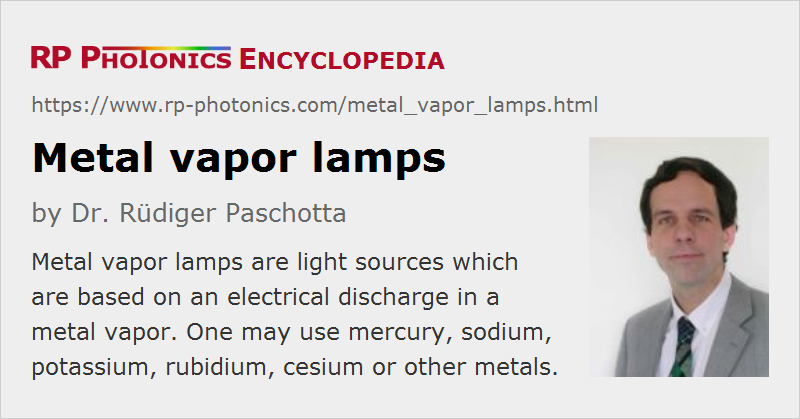

Metal Vapor Lamps
Definition: light sources which are based on an electrical discharge in a metal vapor
More general term: gas discharge lamps
German: Metalldampflampen
Category: non-laser light sources
How to cite the article; suggest additional literature
Author: Dr. Rüdiger Paschotta
Metal vapor lamps are light sources which are based on an electrical discharge in a metal vapor. They can be considered as a kind of gas discharge lamps, although in many cases the metal gets into the gas phase only during operation. Metal vapor lamps have various properties in common with other types of gas discharge lamps. For example, they need to be operated with a special electrical ballast for stabilizing the operation current. Various design aspects need to be specially optimized, for example concerning electrode materials and shapes and envelope materials.
Mercury Vapor Lamps
Mercury (Hg) is the only elementary metal which has a substantial vapor pressure at room temperature. Therefore, a lamp enclosing may in principle contain mercury only. However, some starter gas such as argon or xenon is often used.
The emission of low-pressure mercury lamps exhibits a characteristic optical spectrum with pronounced spectral lines mostly in the visible and the ultraviolet spectral region, but partly also in the infrared. There is a substantial number of standard spectral lines of mercury, which can be produced with mercury-based spectral lamps; typical wavelengths are 184.5 nm, 253.7 nm, 365.4 nm, 404.7 nm, 435.8 nm, 546.1 nm, 578.2 nm and 1014 nm.
Low-pressure mercury lamps are also used as relatively efficient sources of ultraviolet light for various applications. Further, in combination with a phosphor on the inner surface of the glass tube one can generate white light for illumination purposes (→ fluorescent lamps).
A much higher radiance can be achieved in high-pressure mercury lamps. Here, the power density is much higher, which results in a substantially increased mercury pressure and in substantial spectral broadening. High-pressure mercury lamps are mostly used for projection displays. Because of the toxic mercury and advances of other lamp types, they are more and more replaced with other solutions.
For more details, see the article on mercury vapor lamps.
Sodium Vapor Lamps
Sodium vapor lamps largely exploit the characteristic orange 589-nm D-line of sodium (Na) atoms, which has also been extensively studied in physics.
Low-pressure sodium lamps (LPS lamps) produce quasi-monochromatic light, or more precisely speaking there are two closely located spectral lines at 589.0 nm and 589.6 nm. Such lamps are still sometimes used for street lighting and can be easily recognized from the typical orange light color. They are relatively energy-efficient and have a long lifetime. The luminous efficacy can be well above 100 lm/W or even around 200 lm/W.
There are also high-pressure sodium vapor lamps (HPS lamps), also containing some mercury, operated with a much higher power density. Their optical emission spectrum is substantially pressure-broadened due to the high collision rates in the dense gas, and also contains mercury emission lines. The color rendering index is relatively low, but the luminous efficacy can be quite high, e.g. around 150 lm/W. Lamp life times of 20,000 hours and more are possible.
For more details, see the article on sodium vapor lamps.
Other Metal Vapor Lamps
There are metal vapor lamps based on other metals, typically the alkali metals potassium (K), rubidium (Rb) and cesium (Ce), and sometimes other metals such as cadmium (Cd). These are mainly used as spectral lamps, producing specific standard spectral lines, which can be used e.g. for spectral calibration of spectrometers or for refractive index measurements at specific standard wavelengths. Usually, they are operated with relatively low pressure and a moderate power density. The light-emitting region between the electrodes is usually a couple of centimeters long.
Metal Halide Lamps
A further developed kind of lamp is the metal halide lamp, where in addition to the metal there is some halide, typically bromine or iodine. The addition of such halides is particularly useful for efficient white light sources. The used mixture of metals and halides can be optimized for obtaining the desired kind of optical spectrum, a certain color temperature and a high color rendering index.
Questions and Comments from Users
Here you can submit questions and comments. As far as they get accepted by the author, they will appear above this paragraph together with the author’s answer. The author will decide on acceptance based on certain criteria. Essentially, the issue must be of sufficiently broad interest.
Please do not enter personal data here; we would otherwise delete it soon. (See also our privacy declaration.) If you wish to receive personal feedback or consultancy from the author, please contact him e.g. via e-mail.
By submitting the information, you give your consent to the potential publication of your inputs on our website according to our rules. (If you later retract your consent, we will delete those inputs.) As your inputs are first reviewed by the author, they may be published with some delay.
See also: gas discharge lamps, spectral lamps, standard spectral lines
and other articles in the category non-laser light sources
|  |
If you like this page, please share the link with your friends and colleagues, e.g. via social media:
These sharing buttons are implemented in a privacy-friendly way!